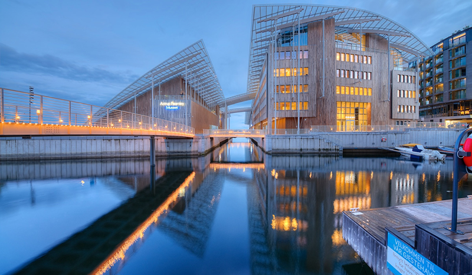

Astrup Fearnlet museet

Astrup Fearnley Museet er et privat samtidskunstmuseum som åpnet i 1993. Museet er grunnlagt og støttet av stiftelsen Thomas Fearnley, Heddy og Nils Astrup og stiftelsen Hans Rasmus Astrup. Museet mottar også bidrag fra Kulturdepartementet. Høsten 2012 flyttet museet fra lokaler i Dronningensgate 4 til nytt museumsbygg på Tjuvholmen i Oslo.